数学越来越奇怪啦。何时数不是数？就是在虚数中呀。假如把虚数与现实中切切实实存在的实数结合起来，那又如何呢？
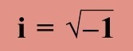
虚数单位不是1而是i，就是-1的平方根。
事实上，数学是非常有创造性的。看起来数学总是循规蹈矩，不能越雷池半步，然而，16世纪，数学家对某一个问题迸发出难以置信的创造力。遵循数学的法则，他们找到的答案恰恰违反了这些法则。与“实数”相对，他们创造了“虚数”。计数方法别无二致，但虚数不是由1构成的。最初，这种做数学的方法似乎荒诞不经，但最终大有妙用。
平方数
数学家打破陈规，基于平方数（见第76页：乘方）引出了虚数的概念。平方数是能由某个数乘以自身得到的数，如4（2×2）、9（3×3）和16 （4×4）。
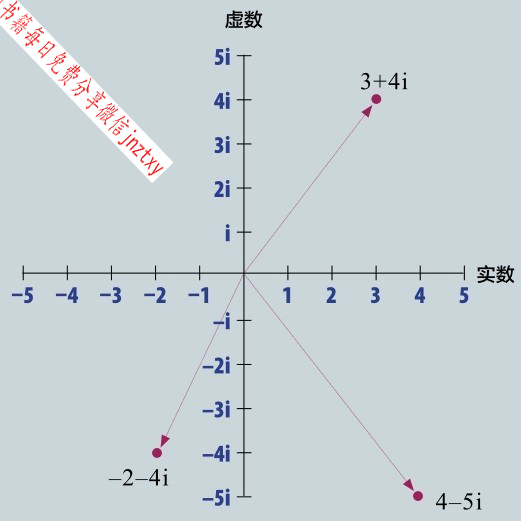
复数是实部（单位1）和虚部（单位i）结合而成的。尽管没法付诸自然，但复数帮我们了解了自然界的许多东西。
平方根
我们说4是“2的平方”，写作22，这种关系反过来也成立：每个平方数都有个平方根，平方根自乘才得到平方数。所以说4的平方根是2。我们写成
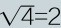
。还有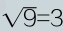
，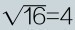
，如此这般。数学中的许多问题，比方说勾股定理（见第36页）以及圆和其他曲线形状（见第74页），若要理解，非得知晓何为平方数、何为平方根不可。负数
从公元8世纪零的发现以来，数学家明白了每个平方数实际上都有两个可能的平方根。其缘由就是负数——小于零的数（见第33页）。负数跟正数一样可以做平方。（+2）×（+2）=+4，这是千真万确的，（-2）× （-2）=+4亦然。乘法里有个规则就是同号（+或-）两数相乘，乘积必为正数。正正相乘为正，负负相乘也为正。设想你欠某人40元，你可以说那人有-40元。债主从你这里拿了两笔20元回去，也就是你将（-2）×（-20元）=40元给了债主。
虚数之仇
传说是意大利古怪的数学家吉罗拉莫·卡尔达诺在他1545年的著作《大术》中引入了虚数，剽窃了其他人的不少想法。首席原告是他意大利的伙伴尼科洛·塔尔塔利亚，他宣称卡尔达诺把承诺保密的研究成果发表于众了。这段争议持续数年，传说也持续流传，最终，塔尔塔利亚说服卡尔达诺的儿子背叛其父。经过罗马大教堂的审讯，卡尔达诺被投入监狱。卡尔达诺的罪名是绘制耶稣基督的生辰星位，数月后出狱。卡尔达诺虔信占星术，以之预测自己的死期。结果预测成真了，因为他在1576年预测日期当天自尽！
吉罗拉莫·卡尔达诺
尼科洛·塔尔塔利亚
无根之数
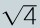
可以等于+2或者-2。但是，正数和负数相乘得负数。（以借钱的例子来看，债主给你2×20元，对于他们是（-2）× 20元，结果他们有-40元！）因为-4是+2和-2的乘积，所以它不是平方数。因此，就我们的规则而言，-4是没有平方根的，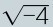
不存在。
可以使用复数里的i来分解混杂的波，比如自然界的声波，将其分成一组简单的波，便于逐个解析。
1的平方
到这里为止，我们还没顾上数字1。数字1是个平方数，但是个非常特殊的平方数，因为1×1=1，且
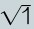
也是1。但是，1×（-1）=-1，我们已经知道了，-1是没有平方根的，至少在实数范围内没有。对抗法则
16世纪，许多数学家尝试进行3次方或4次方的复杂计算。这里要使用平方根，他们发现某些情况下，答案依赖于
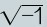
。但这不可能得到，这可能吗？1545年，意大利人吉罗拉莫·卡尔达诺发现了解决这一问题的思路。他假设有下面这么一个数！创造虚数
卡尔达诺决定干脆创造一个虚数单位等于
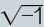
。他描绘了一个假设的数，日后称为虚数。虚数单位就是i，等价于实数里的1。关键的区别在于12=1，而i2=-1。“虚”这个字不是很有助于理解。理解这个的好办法是认为i是另一条数轴上的1。但是，它们的原理是一样的。所以，实数里4是4×1，虚数4i就是4×i。四元数
德国数学家卡尔·弗里德里希·高斯用复数做了大量工作（命名复数也是他的主意）。1831年，他把它们描绘为“影中之影”，他发现i仅仅是诸多复数单位中最简单的。1843年，威廉·罗恩·汉密尔顿揭示了复数仅是四元数的一个子集。四元数是四维的，使用单位j、k、1和i。这是一套非常复杂的数学体系，并非设定虚数在另一坐标轴，而是先将它们展成一个平面，接着是三维立体，再接着是四维的“域”。汉密尔顿在都柏林散步时悟出了这个，唯恐忘记，就把他的公式刻在了石桥上！
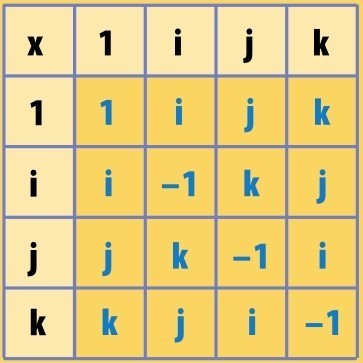
四元数乘法表
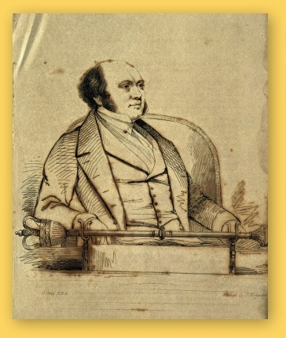
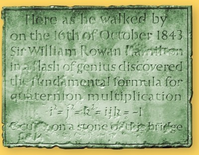
纪念汉密尔顿发现四元数的纪念牌。
美妙的分形图案，一圈一圈地放大重复特征。它是用复数构建的。
创造复数
虚数与实数原理一样：2i+3i=5i，就它们自己而言，跟实数没什么不同。但是，卡尔达诺的同事拉斐尔·邦贝利把虚数和实数结合起来创造了复数。
是面非线
复数有实部和虚部，举个例子：1+i或者7-2i。复数不是在一条坐标轴上，而是填充了整个数字平面，或者说平坦空间。实部和虚部类似坐标，请看第86页的图，现在来说意义匪浅。复数运算也很容易，你只要把实部和虚部分开计算就好了：(1+i)+(7-2i)=8-i。乘法略微特别：i2=-1， i3=-i，还有i/i=1！
实亦是虚
复数可以用来理解新的数学领域，它们也可以用来刻画真实事物，比如波或者其他旋转起伏的东西。举个例子：刻画亚原子的运动就用到复数，甚至计算你房屋里有多大电流也用到复数。这是挺奇怪的，虽然电流不能用虚数来衡量，但是我们仍然用虚数来了解其原理。
参见：
▶零，第30页
▶乘方，第76页
▶数学运算符号，第104页
原理
复数加法看起来难，但用的都是常规的数学知识。用下例看看是怎么算的。
加法和减法，是用实部和虚部分别加减。
(2+2i)+(1+i)
=(2+1)+(2i+i)=3+3i
(6+i)+(4–2i)
=(6+4)+(i–2i)=10–i
乘法是用复数的所有部分乘以另一个数的所有部分。
(2+i)×(3+i)
=(2×3)+(2×i)+(i×3)+(i×i)
=6+2i+3i+i2
下面进行化简。记得i2=-1哦。
=6+5i+i2=6+5i–1
=5+5i